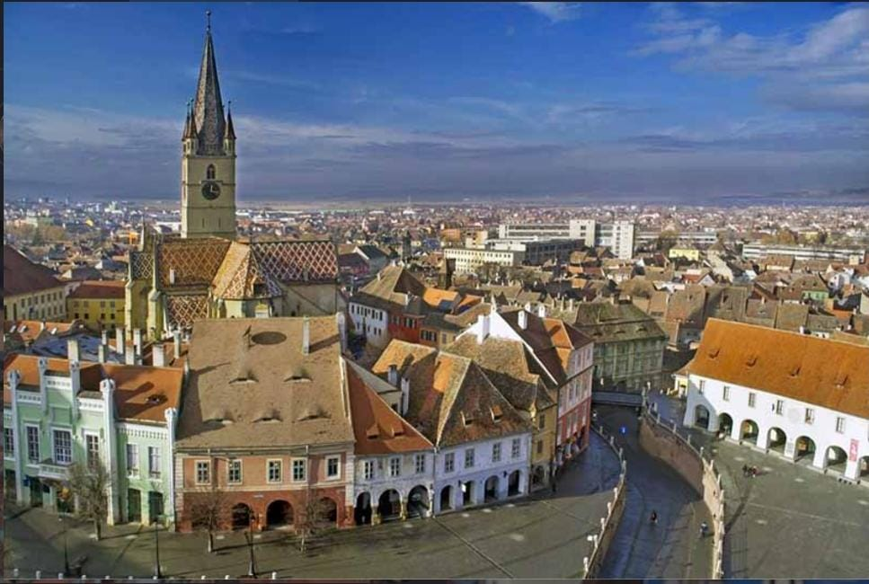

Orasul Sibiu
Sibiu este un oras din Romania, situat in centrul tarii, in regiunea istorica Transilvania.
Acesta se afla in zona temperata a tarii, la poalele Muntilor Carpati.
Orasul este renumit pentru frumusetea sa, fiind unul dintre cele mai vizitate orase din Romania.
Sibiu este un oras cu o istorie bogata, care dateaza din secolul al XII-lea. Orasul a fost fondat de colonistii germani.
Acesta a fost capitala provinciei Transilvania in perioada 1692-1791 si 1849-1865.
Orasul a cunoscut, in ultimii ani, o dezvoltare economica si turistica remarcabila, fiind unul dintre cele mai importante centre economice si culturale din Romania.
